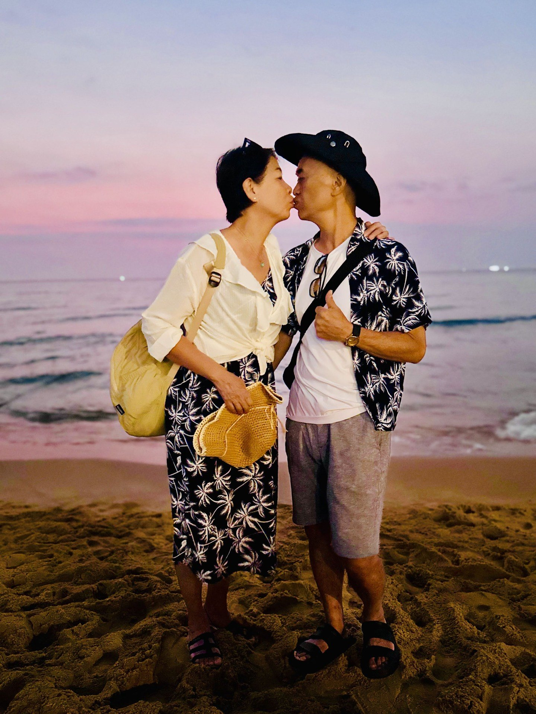
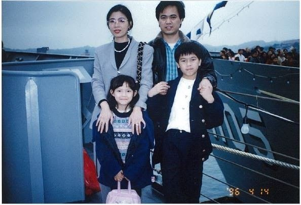
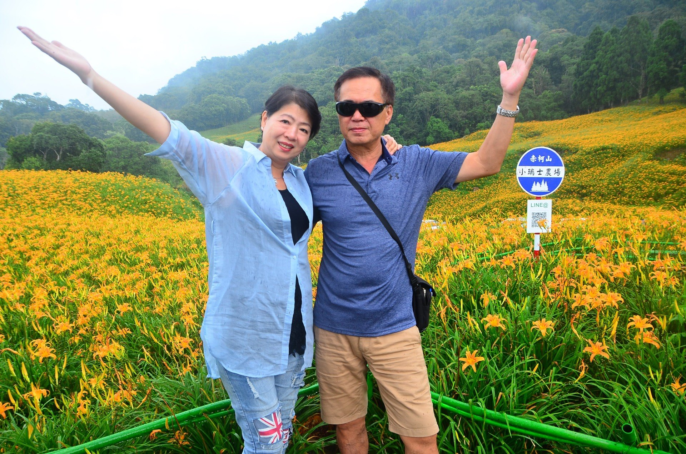

珍藏每一個，有你在的瞬間。
109 張相片 · 9 段影片精華 · 25 張動態相片
01 / THE FILM
把日子，放映一次。
坐下來，讓回憶慢慢開始。
每一張笑臉，都是故事的一部分。
OUR DAYS / 我們的回憶電影1080P · 09:51
六段篇章，一個我們。點選章節，從喜歡的地方開始
02 / LITTLE HIGHLIGHTS
那些會動的快樂。
不只有照片。
還有笑聲、舞步，與一個大大的擁抱。
03 / THE PHOTO ALBUM
一張一張，慢慢想念。
把時間留給喜歡的照片。
點開放大，有動態標記的照片還會動喔。
TO BE CONTINUED
下一段風景，
還要和你一起。
故事還長，回憶還會繼續。